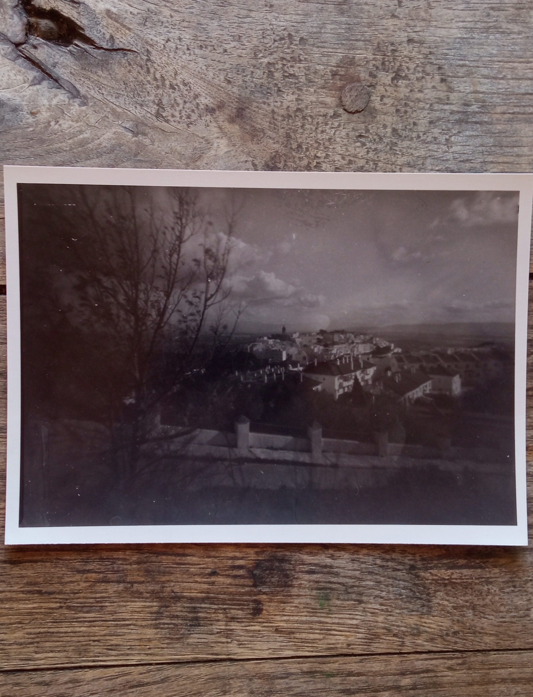
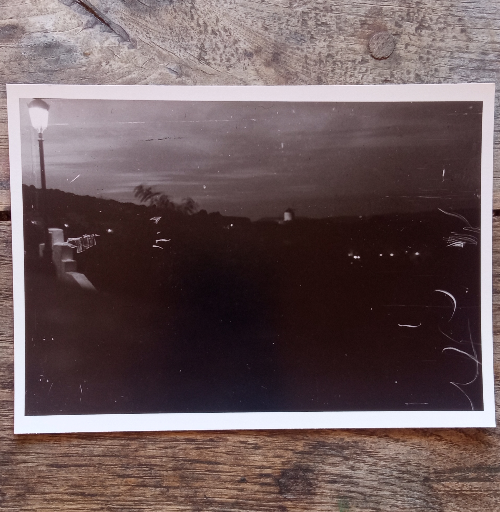

Part of the magic of taking photos in black and white is due to the fact the photographer doesn’t see in black and white. Even if one removes all the errors in exposure and the possible chemical issues, which for me are a norm, we humans don’t see the world in monochrome and the results are always surprising. This and the fact that what your eyes differentiate so easily due to color separation is just mud for the black and white film makes this medium challenging and strangely rewarding.
One other interesting fact, is that photographs, perhaps like music, take a time to create a space in your mind and your heart. what seems terrible at first, might look really great in a short while, and better in longer while. I told this to my dad the other day, on the phone, and he affirmed in an excited voice ( relatively excited.. ) that yeah, he always noticed that with his own portraits, that where he thought he looked not too good, he now looks really cool.

Vejer from cross
My current adventures in film I started with a baby Graflex from the 1930s. I bought it online, and spent some time fixing and cleaning, and trying to figure a way to cut film for the strange 2 1/4" x 3 1/4" format. plus film holder for this unusual format for developing the film in a standard developing tank. I realised quite early that nature and chemistry will shine more than my expertise in this game, I am more of a tinkerer than a real technician, and I enjoy tinkering a lot.
My best photograph in my eyes by far, so far… is one I took using a multi film sheet holder, it is the Grafmatic, it is ingenius, and allows firing 6 sheets, but… being almost a century old, mine does tend to get stuck. In this particular case the subject being a far away windmill at night, the meter demanded 8 seconds exposure, and the graflex capable of 1/10 of a second ( early days, I didn’t think of just openning the shutter and use a lens cap to control the time ) meant I had to fire it 80 times, but after about 10 exposures I realise that every time that I wind the shutter between shots, I expose the film again, since I wasn’t replacing the film cover.. well at that point I decided to stop, and also at that moment the film holder got stuck. Later at home in a dark bag I managed to rescue that sheet, not without seriously scratching it.
Art.

Scratchy night
{kind=link}
{kind=link}
{kind=link}
{kind=link}
{kind=link}